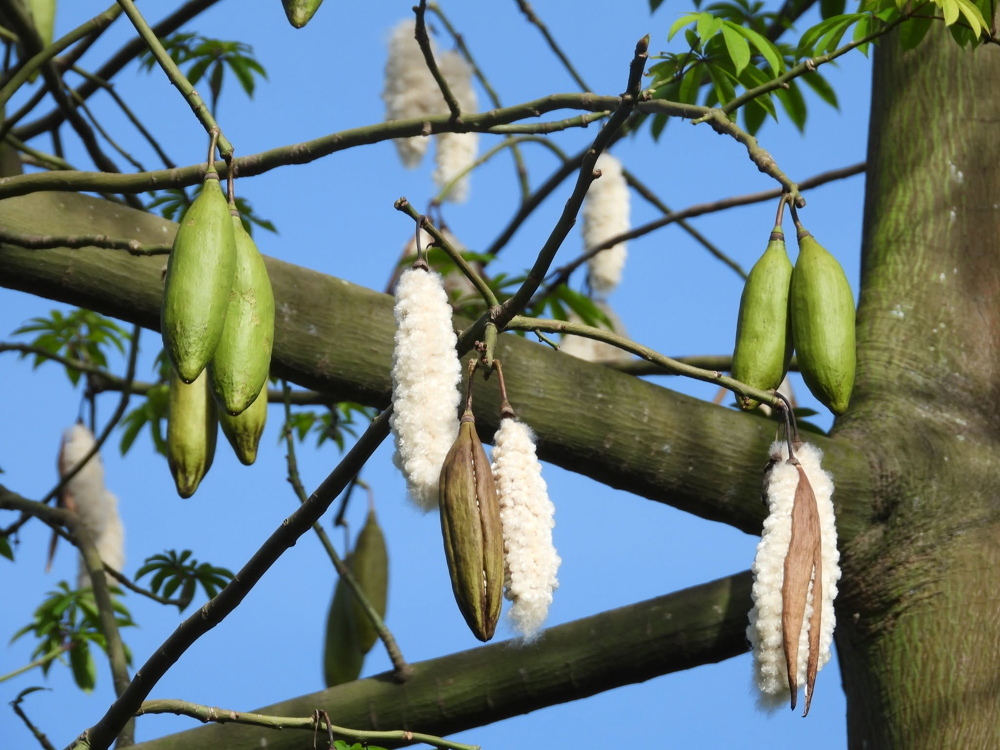
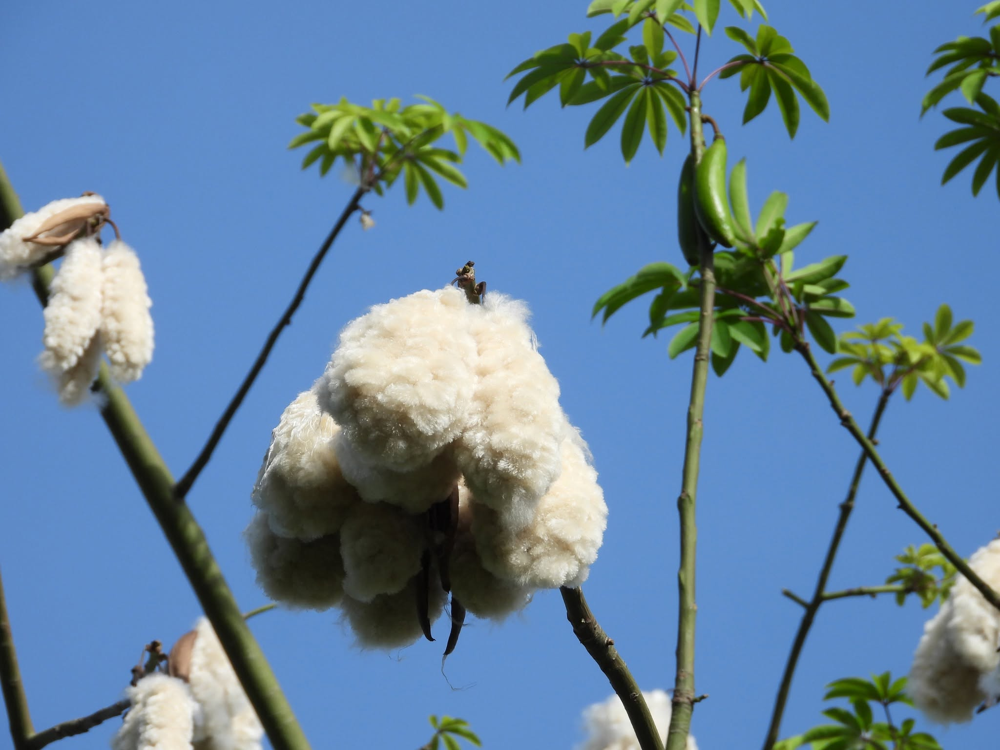

Tree cotton, sold as filling
A woody perennial cotton, grown as a standing tree and picked by hand. What comes off it is filling fibre - the traditional stuffing for pillows and mattresses across India. It is the only thing we grow and the only thing we sell, and this page is the honest account of what it does well and where it does not belong.
Not the cotton you put on a spinning frame
Spinning cotton is graded on staple length, strength and uniformity, because all three decide whether it will hold together as a yarn. None of that applies here. Our fibre is short, fine and irregular - the qualities that rule it out of a spinning frame are exactly the ones that make it fill a volume softly and evenly.
So it is measured differently. What matters for filling is how much volume a kilo occupies, how well it springs back after being compressed, how clean it is of seed and shell, and how dry it arrives. Those are the numbers on our test report, and staple length is not among them.
Not spinning cotton. If you have arrived here looking for fibre to spin, weave or make into garments, we cannot help and neither can this material. It is a filling fibre. For yarn you want ginned lint from a cotton ginner, and we would rather point you there than sell you something that will fail on your line.

Tree cotton against the alternatives
Indicative typical values for the three fibres most often considered for the same job. Real figures vary by grade and season - treat this as orientation, not a specification.
| Our tree cotton fill | Polyester fibrefill | Foam | |
|---|---|---|---|
| Origin | Natural, perennial crop | Extruded petrochemical | Blown petrochemical |
| Form supplied | Loose cleaned fibre, baled or bagged | Loose fibre or bonded batt | Cut sheet or crumb |
| Feel when filled | Dense, yielding, settles into shape | Springy and uniform | Firm, holds its own shape |
| Loft over time | Settles with use; re-carding restores it | Holds loft longest | Breaks down and crumbles |
| Breathability | High - air moves through the fill | Moderate | Low; traps heat |
| Repairable | Yes - open, re-card, top up | Rarely worth it | No |
| Can be spun | No - too short and irregular | Yes | No |
| Flammability | Readily flammable untreated | Melts; often treated | Requires treatment |
| End of life | Composts | Does not biodegrade | Does not biodegrade |
The honest summary: tree cotton trades the long, uniform loft of a synthetic for breathability, repairability and a fibre that goes back into the ground at the end of its life.
How a grove is grown
Establishment
Trees are raised from seed at wide spacing and allowed to develop a full frame. The first commercial picking comes years after planting - the trade-off for a crop that then bears for decades without being resown.
Perennial management
Instead of tillage and sowing, the annual cycle is pruning, mulching and canopy management. Soil is not turned over each season, so root systems, organic matter and soil biology persist between harvests.
Intercropping
Wide spacing leaves usable ground between trees. Pulses, millets and other food crops are commonly grown in the alleys, which spreads the grower's risk across more than one harvest.
Pest and water strategy
The species is deep-rooted, drought-hardy and largely untroubled by the pests that drive spraying on annual cotton - a material advantage when the fibre has to satisfy an organic standard.
Harvest
Bolls ripen unevenly and split on the branch, so trees are picked by hand over several passes. Selective picking means less shell, leaf and grit reaching the cleaning line than shaking a whole tree would deliver.
Renewal
Productivity is maintained by pruning back and, eventually, replacing individual trees - grove by grove, not field by field. The certified area does not go through a bare-soil phase.
What a season looks like
A grove carries every stage at once. Bolls set green and stay closed for weeks, dry to brown on the branch, then split on their own and hold the fibre out to be picked.




Design to the fibre, not around it
Tree cotton fills a volume; it does not build a structure. Specifying it as though it were a high-resilience foam or a polyester fibrefill produces a disappointing product and an avoidable argument on the filling line.
- Overfill by design - the fill settles in the first weeks of use, so target finished firmness with that allowed for rather than filling to feel right on day one.
- Make it refillable - a zip or a slip opening lets the user top up or re-card. This is the fibre's biggest advantage over a sealed foam core; do not design it away.
- Use a close-woven cover - the fibre is fine and will work its way through a loose weave or an open seam. A downproof-style ticking is the usual answer.
- Expect batch variation - a hand-picked perennial crop is less uniform than an extruded fibre. Build tolerance into the spec.
- Blend if you want durability - mixed with cotton fill or a proportion of polyester, it holds loft longer. Many mattress makers do exactly that.
End uses that suit it
- Mattresses, futons and floor bedding
- Pillows, bolsters and meditation cushions
- Soft toys, dolls and nursery goods
- Quilt and comforter batting
- Upholstery padding and seat squabs
- Pet beds and cushion inserts
Where we grow it
Our contracted groves sit in a traditional tree cotton belt - 1,180 acres, rain-fed and farmed by 640 smallholder families.
The two things that catch people out
It is dusty and it is flammable. Loose tree cotton throws fine fibre and shell dust when it is opened, and untreated fibre catches light readily. Filling stations want extraction and enclosure, and the bales want to be kept away from ignition sources in the warehouse. Neither is unusual for a natural fill, but both are worth planning for before the first pallet arrives.
Your finished product carries its own obligations. Mattresses, pillows and toys are regulated on flammability, labelling and - for toys and nursery goods - chemical safety, and those rules apply to the article you sell, not to our bale. We will give you the fibre-side documentation those tests need. We cannot certify your product, and you should be wary of a supplier who says they can.
See our testing programme → · What our certification covers →
Sourcing tree cotton?
Tell us what you are filling and we will say honestly whether this fibre suits it - before you commit to an order.